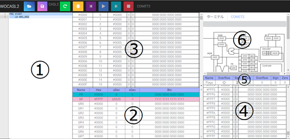
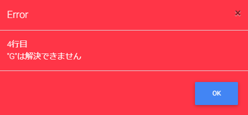

WOCASL2の使い方
1．画面レイアウトについて

①テキストエディタ
プログラムを実際に打つ場所です
②レジスタ（スタックポインタ、プログラムレジスタ）エリア
レジスタやスタックポインタ、プログラムレジスタの値を確認するための場所です
③メモリエリア
メモリの値やラベル、命令セットについて確認する場所です
④スタックエリア
スタックの値、現時点のスタックポインタの指す場所を確認する場所です
⑤フラグレジスタエリア
フラグがどのような状況下確認する場所です
⑥COMETⅡエリア
COMETⅡの動きを確認する場所です（未実装）
2．ボタンの説明
ファイル読み込みボタン（未実装）
テキストファイルを読み込み、テキストエディタに反映させるもの
ファイル保存ボタン
テキストエディタの文字をテキストファイルにして保存するためのボタン
リセットボタン
②～⑥のエリアに反映された数字とラベル、リテラルを全て初期化するボタン
ショートカットキーは、F2
アセンブルボタン
テキストエディタのプログラムをコンパイラし、メモリエリアに反映させるボタン
ショートカットキーは、F4
ステップバックボタン
実行ボタン、ステップ実行ボタンで動作したプログラムを1つ前に戻すボタン
ショートカットキーはバックスペース
実行ボタン
プログラムが終了するまで実行させるボタン、ただし停止ボタンで停止はできる
ステップ実行ボタン
プログラムを1ステップ押すたびに実行させるボタン
ショートカットキーはエンター
停止ボタン
プログラムの実行を即時停止させるボタン
3．プログラムの動作手順
1.
テキストエディタにプログラムを記述します
2.
黄色のアセンブルボタンを押します
3.
エラーが起きた場合は下図のようなアラートが表示されますので、表示された行数とメッセージを参考に修正してください

4.
正常に作動するプログラムの場合は下図のようなアラートが表示されます。
5.
アセンブルに成功しましたら、ステップバックボタン、実行ボタン、ステップ実行ボタン、停止ボタンが使用可能となるので、あとはお好きどうぞ。
6.
プログラムがこれ以上動作しないときは下図のようなアラートが出ます。これでプログラムの実行が終了となります。